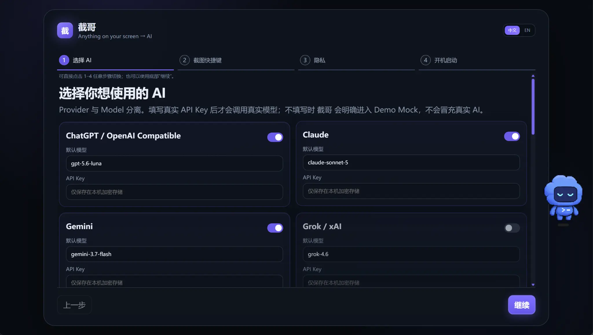
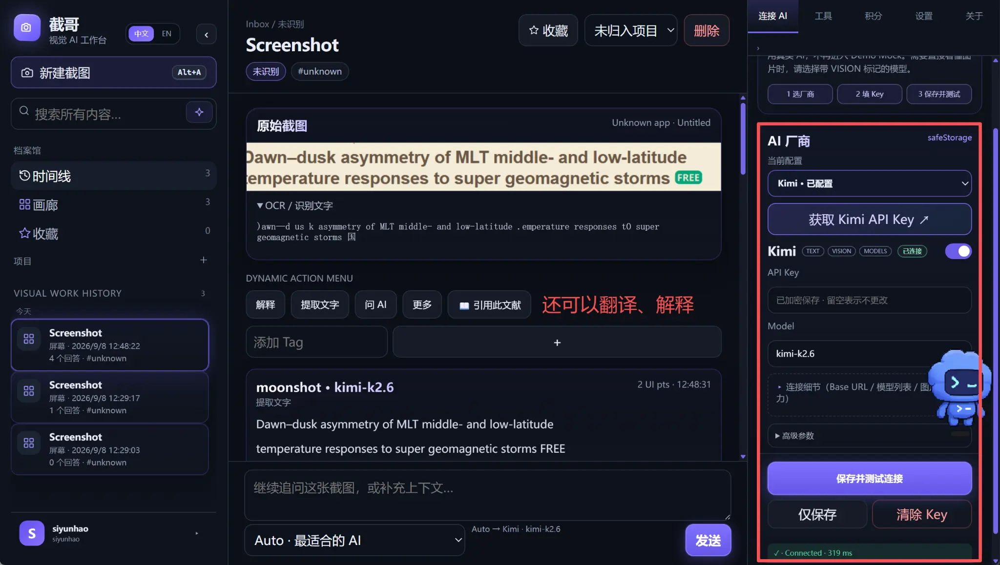

截图完成就是解析开始
左键松开的瞬间提交裁剪区域，先呈现截图和操作区，OCR 与 AI 在后台继续更新。
正在解析内容OCR + VISION
截哥把截图、OCR、联网 AI 与文献引用收进同一条工作流。框选之后，不再反复上传、切页或重写上下文。

首次启动按四步完成厂商、模型、快捷键与隐私设置。Key 仅保存在本机加密存储；未填写时会明确进入演示模式。
截哥不是聊天框套壳。它从你正在看的屏幕开始，把识别、提问、比较和沉淀连成一条短路径。
左键松开的瞬间提交裁剪区域，先呈现截图和操作区，OCR 与 AI 在后台继续更新。
按视觉能力、速度、成本和任务类型推荐模型，也允许手动选择与 Compare。
同一次安装可继续使用登录状态；每次运行 Setup 都会清除旧账号、AI 配置、截图、项目和本地文献库，并进入新用户注册。
每一步都给出可见反馈，网络模型较慢时也不会让界面卡住。
按快捷键并拖出需要理解的区域。
选区立即提交，截图层退出。
本地 OCR 先反馈，视觉 AI 继续补充。
总结、解释、翻译、搜索或比较答案。
柱状图、饼图和折线图把截图类型、模型选择与效率变化放在同一视图。下方为演示数据。
这不是概念图。真实工作区把截图历史、OCR、AI 回答、文献引用与模型连接放在同一屏内。

按 Alt+A 框选后，本地 OCR 先返回文字；连接的 AI 随后继续理解图像与上下文。无需重新上传，也不用在多个网页之间搬运内容。
识别文字只是起点。继续解释公式、读图、翻译段落，并把同一主题收进 Project。
管理员发布的内容会同时进入这里和截哥桌面版；草稿与已下架内容不会公开。
API Key 使用系统安全存储。敏感应用黑名单、本地 OCR 与远程图片保护在桌面端执行。
JieGe v2.3.8 已发布。运行 Setup 会清除本机旧账号、AI 配置、工作区及本地文献库，请先备份；Portable 使用独立数据目录。